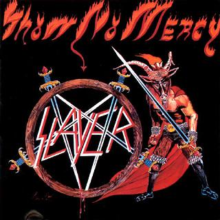
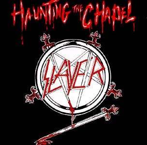
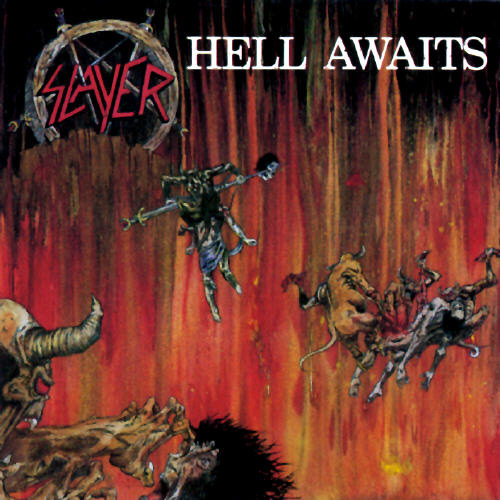
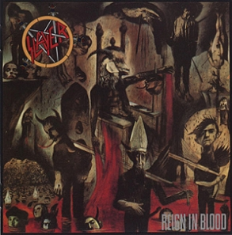
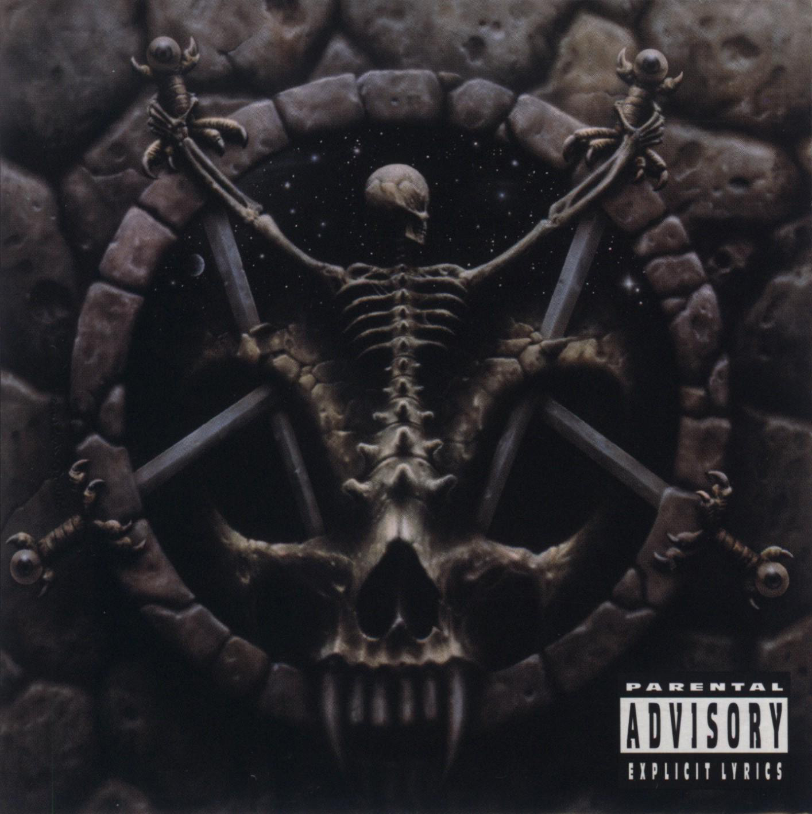

#17058 1 2007-09-02T13:31:39Z faemir [Firstly sorry if this has been done before, but search isn't working for me at the moment.]
So what type of music do you like, and why?
]------------------------[
I used to like rock music, but now i'm more of what you would call a 'metal head'
I like most metal subgenres, with a few exceptions (thrash & nu)
Although I like to think myself as open minded to any music.
#361564 2 2007-09-02T13:36:34Z uNcoNditioNal House mainly, with a little acid and some jazzy stuff from time to time.
Rythmic, melodic, repetetive.
#361570 3 2007-09-02T14:02:57Z 7! I listen to all sorts of metal and some rock. My collection varies from classic AC/DC, early metal like Judas Priest, to more heavier Pantera, industrial sounds from Ministry and Nine Inch Nails, to the extreme, not-what-most-people-would-ever-want-to-hear death/black metal, like Mayhem.
#361573 4 2007-09-02T14:16:11Z apg I rarely listen to what everyone else does. Usually, it's the rarer electronic sub-genres that spark my interest - including but not limited to glitch, minimal, IDM, electro-industrial, and ambient.
Mostly everything that's experimental/abstract or avant garde in terms of music. Deep, but not whitewash. I stay open to new ideas.
#361577 5 2007-09-02T14:48:41Z Thomas I like older rock - sometimes more classic like Aerosmith and maybe even Beatles - and sometimes I like stuff like Guns 'N Roses. There's also a lot of other stuff that I like, but only have a few songs to show for it.
#361590 6 2007-09-02T15:45:47Z 7! Here's a list.
AC/DC, At the Gates, Beastie Boys, Bullet For My Valentine, Butthole Surfers, Dark Tranquility, Darkest Hour, Dead Kennedys, Disturbed, Fear Factory, Fu Manchu, Goldfinger, In Flames, Judas Priest, Kaiser Chiefs, Mayhem, Megadeth, Metallica, Ministry, Mudvayne, Napalm Death, Nightrage, Nine Inch Nails, OK Go, Pantera, Powerman 5000, Primus, Public Enemy, Rage Against the Machine, Sepultura, Slayer, Static-X, Trivium.
#361591 7 2007-09-02T15:55:46Z The_Muffin_Man I like progressive rock and classic rock. Some of my favorite bands are The Dregs/The Dixie Dregs, Gentle Giant, Frank Zappa/Frank Zappa and the Mothers/ The Mothers of Invention, King Crimson, Yes, Emerson Lake and Palmer, The Who, and Led Zepplin, The Allman Brothers. Stuff like that. In no particular order.
#361592 8 2007-09-02T16:00:09Z Gforce20 I rarely listen to what everyone else does. Usually, it's the rarer electronic sub-genres that spark my interest - including but not limited to glitch, minimal, IDM, electro-industrial, and ambient.
Mostly everything that's experimental/abstract or avant garde in terms of music. Deep, but not whitewash. I stay open to new ideas.
We like the same stuff!

#361596 9 2007-09-02T16:06:25Z AMomentLikeThis You want a list of the bands I listen to mostly? Okay (in alphabetical order):
30 Seconds To Mars
36 Crazyfists
+44
A.F.I.
The Academy Is...
Adema
AeroSmith
Aiden
Alexisonfire
The All-American Rejects
Amber Pacific
American Hifi
Angels And Airwaves
Anti-Flag
Arctic Monkeys
Armor for Sleep
The Ataris
Atreyu
The Automatic
Autopilot Off
Avenged Sevenfold
Avril Lavigne
Bayside
The Beach Boys
Billy Talent
Black Eyed Peas
Blink-182
Bouncing Souls
Box Car Racer
Boy Kill Boy
Boys Like Girls
Brand New
British Beef
Bullet For My Valentine
The Caesars
Coheed and Cambria
Coldplay
Cradle Of Filth
Dashboard Confessional
Dir en Grey
Donots
Dragonforce
Drop Dead, Gorgeous
Elisa
Eminem
Enter Shikari
Evanescence
The Explosion
The F-Ups
Fall Out Boy
Fatboy Slim
Feeder
Fightstar
Finch
Five For Fighting
Foo Fighters
Fountains Of Wayne
The Fray
From First To Last
Funeral For A Friend
Goldfinger
Goldie Lookin' Chain
Good Charlotte
Gorillaz
Green Day
Guns N' Roses
Gwen Stefani
Gym Class Heroes
Hadouken!
Hand Me Down Buick
Hawthorne Heights
Head Automatica
Hellogoodbye
HIM
Home Grown
The Hoosiers
In Flames
Incubus
Jimmy Eat World
Just Jack
Justin Timberlake
Kanye West
Kelly Clarkson
The Killers
Kiss
The Legion Of Doom
Limp Bizkit
Linkin Park
Lostprophets
Lustra
Madina Lake
The Mars Volta
The Mascara Story
Matchbook Romance
MC Lars
Meat Loaf
Mercy Mercedes
Mindless Self Indulgence
Moments In Grace
Motorhead
Mott The Hoople
Mudmen
Muse
My Chemical Romance
Name Taken
New Found Glory
Nickelback
Nightwish
Nirvana
Nizlopi
The Offspring
OPM
Panic! At The Disco
Paramore
Placebo
Plain White T's
The Red Jumpsuit Aparatus
Reggie & The Full Effect
Rites Of Spring
Saosin
Senses Fail
Silverstein
Simple Plan
Snow Patrol
Something Corporate
Son Of Dork
Spice Girls
The Streets
Sugarcult
Sum 41
System Of A Down
Taking Back Sunday
TheAUDITION
Throwdown
Valencia
The Verve
Yellowcard
Yoki Mori
Zebrahead
There are many more bands I really like but only have a couple of songs of. I haven't listed them.
I've listened to at least 3 of each of these bands song's 60+ times.

Oo.
Type of music.. Maybe some other time

#361600 10 2007-09-02T16:25:29Z Twistkill Mostly rock or metal and electronica, with some rap thrown in for good measure...
10 Years, Staind, Billy Talent, Three Day's Grace, Breaking Benjamin, Disturbed, and Dragonforce are some of my favorites...
#361622 11 2007-09-02T17:22:14Z McP3000 I like
-60's classic rock like the Beatles, Jimi Hendrix, Pink Floyd
-70's hard rock like led zeppelin, ac/dc, black sabbath, lynyrd skynyrd
-80's metal like metallica, motorhead, megadeth, and iron maiden
-90's alternative like foo fighters, nirvana, smashing pumpkins, radiohead, red hot chili peppers
-00's a mix.
Here's a full list of the bands in my iTunes. I own one CD or more of all these bands.
+44, AC/DC, The Allman Brothers Band, Angels and Airwaves, As I Lay Dying, At the Drive-In, Atreyu, The Beatles, Black Sabbath, Blink-182, Boston, Box Car Racer, Cheap Trick, CKY, Coldplay, The Decemberists, Def Leppard, Dream Theater, Eagles, Eagles of Death Metal, Foo Fighters, Franz Ferdinand, Guns N' Roses, Incubus, Interpol, Iron Maiden, The Jimi Hendrix Experience, Kansas, Keane, Led Zeppelin, Linkin Park, Lynyrd Skynyrd, The Mars Volta, Megadeth, Metallica, Minus the Bear, Modest Mouse, Motorhead, Muse, The Music, The New Pornographers, Nirvana, Pearl Jam, Pink Floyd, Queens of the Stone Age, Radiohead, Red Hot Chili Peppers, Sigur Rs, Smashing Pumpkins, Thom Yorke, Transatlantic, The Velvet Underground, The White Stripes
#361623 12 2007-09-02T17:30:09Z Zugbop Queen! Gotta be the best band of all time. Also, Mika is good, and stuff like Kaiser Chiefs is ok.
#361631 13 2007-09-02T18:16:27Z Mr__X I like
-60's classic rock like the Beatles, Jimi Hendrix, Pink Floyd
-70's hard rock like led zeppelin, ac/dc, black sabbath, lynyrd skynyrd
-80's metal like metallica, motorhead, megadeth, and iron maiden
-90's alternative like foo fighters, nirvana, smashing pumpkins, radiohead, red hot chili peppers
-00's a mix.
Wow. My tastes are almost exactly like that, just minus the newer stuff.
#361638 14 2007-09-02T18:51:16Z epigone I like modern alternative rock, indie rock/folk, and some good classic rock thrown in for good measure.
#361639 15 2007-09-02T19:04:07Z Borealis I like music.
#361642 16 2007-09-02T19:24:05Z mustafa My musical tastes have really evolved a lot over the years. When I was really little, my parents listened to nothing but the beatles, so that was basically the only band that I knew/liked. I don't quite remember how, but I heard some Aerosmith in a movie I was watching, and really liked it, which led me into Led Zeppelin/Jimi Hendrix/Queen/The Who, etc. Since then, I've been slowly moving towards newer and heavier stuff. A complete list would probably be
AC/DC, Aerosmith, Apocalyptica, The Barenaked Ladies, The Beatles, the Black Keys, Black Sabbath, Charlie Parker, CCR, The Dave Brubeck Quartet, Deep Purple, the Doors, Dream Theater, The Eagles, Elton John, Gerry Mulligan, Jimi Hendrix, Joe Satriani, John Coltrane, John Lennon, Led Zeppelin, Lester Young, Metallica, Nirvana, Phish, Pink Floyd, Primus, Queen, Radiohead, Red Hot Chili Peppers, The Rolling Stones, Scorpions, Simon and Garfunkle, Sonia Dada, Spinal Tap, Talking Heads, Tenacious D, Thin Lizzy, U2, Van Halen, The White Stripes, The Who, Wolfmother, ZZ Top.
Oh yeah, a bit of jazz, just because I play saxophone and my band teacher made me.
#361810 17 2007-09-03T07:41:56Z George Nobody likes classical?
#361817 18 2007-09-03T11:14:18Z Rincewind SW I like quite a lot of subgenres of rock, pop and electronica. I tend to love a genre for a while, then get really hooked on another. For instance, I've listened to post-rock, trip-hop, and electro-pop a lot at one time or another.
#361822 19 2007-09-03T12:03:47Z Pembie Rock to hard rock, 70's and 80's. Such as: Van Helan, AC/DC, Gunners, Metallica, Foo Fighters, Chilli Peppers, Queen, INXS, Oasis. However I also like bands such as Toto and Bloc Party. So my taste is quite varied.
At the moment I'm really into Poison by Alice Cooper.
#361823 20 2007-09-03T12:07:04Z fingersonthefrets pop rock alternative bit of jazz
those kinda things
libertines, shins, arctic monkeys, view, of montreal etc.
#361826 21 2007-09-03T12:20:37Z Ad Music genres of my taste?
I like a big bag of Pick'n'Mix.
1.77 for a large, courtesy of Woolworths.
#361828 22 2007-09-03T12:35:02Z 7! Nobody likes classical?
Keron Cyst does.
#361839 23 2007-09-03T13:06:54Z Mechtradevil AC/DC, The Allman Brothers Band, As I Lay Dying, The Beatles, Eagles, Incubus, Iron Maiden, Jimi Hendrix, Led Zeppelin, Megadeth, Metallica, Muse, Nirvana, Pearl Jam, Pink Floyd, Queens of the Stone Age, Red Hot Chili Peppers, The White Stripes. There, skanked a bunch of bands off of somebody...
I also like Evanescence, Joe Satriani, Eric Clapton, Eric Johnson, my own band's music, Santana, mexican and spanish guitar styles, and many various types of heavy metal such as Pantera, Early Megadeth, Metallica, AILD, etc. I'm a big fan of movie themes, and musicals, but only NOT lame ones. I hate High School Musical. I mean like, James Bond themes, and The Phantom of The Opera.
#361840 24 2007-09-03T13:11:49Z T3chno My Fave Band List: -In order of importance-
Red Hot Chili Peppers
Incubus
Ac/Dc
Linkin Park
Metallica
Jimi Hendrix
+some others I don't have on mind right now...
#361851 25 2007-09-03T14:33:15Z tincanbilly I like certain pieces from most genres, but I don't like not really on genre as a whole.
#361871 26 2007-09-03T16:11:31Z VV33 modern indie music mostly
with some clasic rock too
and a little bit of metal
#361875 27 2007-09-03T16:23:15Z Yahoozy http://www.last.fm/user/Couchraven/
Go to my Top Ten Song (Subject to Change) journal entry, as well.
#361969 28 2007-09-03T22:34:12Z Tsukatu Quote: Vyacheslav, September 03, 2007 07:35 am
Nobody likes classical?
Keron Cyst does.
Keron Cyst
very does.
My favorite band these days is
Maximum the Hormone.
I've no clue what they're saying, but it sounds hella kickass.
#362014 29 2007-09-04T01:01:54Z smartalco basically exactly what faemir said, only with a little more classic rock thrown into the mix
(recap: started with rock, now likes metal, will listen to just about anything)
#362025 30 2007-09-04T01:28:04Z Sgt. Poptarts Techno. Why? Oonce Oonce Oonce. That, and I like the beats to the music.
Video Game Music. Why? I love video games, very good music.
#362083 31 2007-09-04T06:50:29Z Borealis Expanding upon my last post, I like music. It would be impossible to post a list of artists, so here are the genres my foobar says I have more than 5 artists under. I'm discounting mixed genres like Blackened Death Metal here.
A capella
Ambient
Art-Rock
Avantgarde
Baroque
Black Metal
Blues
Breakcore
Classic Rock
Dance
Darkwave
Death Metal
Doom Metal
Drone
Electronica
Experimental
Folk
Folk Metal
Free Jazz
Grindcore
Gamelan
Gabber
Hard Rock
Hardcore
Heavy Metal
Indie
Industrial
Jazz Fusion
Mathcore
Melodic Death Metal
Noise
Noise Rock
Post-Rock
Post-Metal
Power Metal
Progressive Rock
Ragga-core
Rmur
Romanticist
Shoegaze
Sludge
Stoner Rock
Thrash Metal
Trip-Hop
Viking Metal
Consult your local Wikipedia for further information on these genres.
#362091 32 2007-09-04T07:12:16Z fractalchaoz I rarely listen to what everyone else does. Usually, it's the rarer electronic sub-genres that spark my interest - including but not limited to glitch, minimal, IDM, electro-industrial, and ambient.
Mostly everything that's experimental/abstract or avant garde in terms of music. Deep, but not whitewash. I stay open to new ideas.
We like the same stuff!
I second that!
And I'll chuck some Rock, Heavy Metal, Nu Metal and Death Metal in there too. And yes, I know they're rather different things. But I've only really just started listening to Death Metal, so there. So far, my favourite bands are Breaking Benjamin and Dimmu Borgir.
#362605 33 2007-09-06T03:41:14Z scythe33 Early British rock, mostly-but that's a bit limiting. A list would include the Beatles, Cream, the Doors, Led Zeppelin, CrosbyStillsNash&Young, the Moody Blues, Jimi Hendrix, Pink Floyd, Procul Harum, the Jefferson Airplane (before they were the starship), Iron Butterfly, the Rolling Stones, the Who, Van Halen, and Yes, plus a few oddities like 311, Disturbed, ACDC, Nirvana, Sublime, and the Red Hot Chili Peppers, though I don't consider myself a fan of alternative, metal, or grunge.
#362623 34 2007-09-06T04:51:39Z Turtle For the Great Metanet Love Game, I am pretty sure everyone chose rock.
every one I have come to, anyways.
#363102 35 2007-09-08T04:10:51Z SamuelDKelso DMB is my favorite band.
I'll listen to pretty much any classic rock.
Other specific bands/artists are Tim Reynolds, Monte Montgomery, Led Zeppelin, and Blink 182.
,kelso
#363104 36 2007-09-08T04:21:20Z mistaken72 Totally on Dream Theater. Octavarium and Prophets of War are awesome.
#363173 37 2007-09-08T10:05:57Z faemir dream theater political song are very good =]
(though in the name of god is better than both of those mistaken!)
#363202 38 2007-09-08T13:41:24Z 7! My dad and I were listening to the awesomeness of Megadeth yesterday...great band, great music.
#363389 39 2007-09-08T23:53:38Z Solarion dream theater political song are very good =]
(though in the name of god is better than both of those mistaken!)
You do NOT say In The Name Of God is better than Octavarium. Particularly the Score version. Listen to that, and you'll change your mind.
Anyway, I'm into progressive and space rock (and metal, but more rock), post-rock and electronica. Long songs FTW.
#363410 40 2007-09-09T00:58:50Z mustafa dream theater political song are very good =]
(though in the name of god is better than both of those mistaken!)
You do NOT say In The Name Of God is better than Octavarium. Particularly the Score version. Listen to that, and you'll change your mind.
Anyway, I'm into progressive and space rock (and metal, but more rock), post-rock and electronica. Long songs FTW.
Octavarium is way better than In The Name Of God, but I think that A Change Of Seasons, In the Presence of Enemies, and most of Scenes From a Memory are better than Octavarium. I haven't heard the Score version though, I'll have to check that out.
#363575 41 2007-09-09T09:05:14Z Solarion Octavarium is way better than In The Name Of God, but I think that A Change Of Seasons, In the Presence of Enemies, and most of Scenes From a Memory are better than Octavarium. I haven't heard the Score version though, I'll have to check that out.
That's quite true for the album version. I got the Score version first, and when I heard the original I was quite disappointed in comparison.
#365091 42 2007-09-15T03:23:57Z LNKNPRK first of all...
LINKIN PARK is the best band ever
followed closely by...
FORT MINOR
i also LOVE LOVE LOVE basshunter, that swedish dance band. i like pretty much every song by them.
others:
akon
t-pain
Kanye West (sometimes)
POD
Tobymac
Nickelback
pillar
Jay-z
others, but that's all off the top of my head.
#365109 43 2007-09-15T04:56:07Z Sniperwhere My favorite bands are Led-Zeppelin and RHCP. I don't really have alot of music as I'm very picky about what I like.
#365133 44 2007-09-15T07:51:18Z ska Here's a list.
AC/DC, At the Gates, Beastie Boys, Bullet For My Valentine, Butthole Surfers, Dark Tranquility, Darkest Hour, Dead Kennedys, Disturbed, Fear Factory, Fu Manchu, Goldfinger, In Flames, Judas Priest, Kaiser Chiefs, Mayhem, Megadeth, Metallica, Ministry, Mudvayne, Napalm Death, Nightrage, Nine Inch Nails, OK Go, Pantera, Powerman 5000, Primus, Public Enemy, Rage Against the Machine, Sepultura, Slayer, Static-X, Trivium.
slayer? Really?? Death METAL OH MY GOD!!!!!!!!!!!!!!!!!!!
same
in no particular order: silverchair, jamiroquai

, red hot chili peppers, green day, [ electrinica/ministry e.g. Basement Jaxx, Eric Prydz, Cabin Crew etc.] Papa Roach, R.E.M. Scribe etc U2, Coldplay Lenny Kravitz, Train, Foo Fighters and the killers and
I HATE CHRISTINA AGUILERA!! 
#365140 45 2007-09-15T09:05:46Z apg i also LOVE LOVE LOVE basshunter, that swedish dance band. i like pretty much every song by them.
Basshunter's an individual DJ, not a band. His real name's Jonas Altberg. Just thought I'd point that out.
#366271 46 2007-09-20T06:34:40Z Myrrhman http://www.last.fm/user/keyinblackman/
Eh, only half-indicative of my taste; I listen to my ipod equally.
#366274 47 2007-09-20T06:53:47Z Jesse first of all...
LINKIN PARK is the best band ever
AHAHAHAHA. You're wrong. Linkin Park is so incredibly generic and boring.
I listen to most of the metal genre(except for wussy 'Nu metal', which should just be called "We make money for having little to no talent"), but my favourite music is that of Psyopus, The Dillinger Escape Plan, Spastic Ink, and other bands similar. They all play progressive/Math/Tech metal, which includes ridiculously complicated rhythmic patterns, time and tempo changes and other jazz influenced mayhem.
#366335 48 2007-09-20T17:47:29Z Borealis I listen to most of the metal genre(except for wussy 'Nu metal', which should just be called "We make money for having little to no talent"), but my favourite music is that of Psyopus, The Dillinger Escape Plan, Spastic Ink, and other bands similar. They all play progressive/Math/Tech metal, which includes ridiculously complicated rhythmic patterns, time and tempo changes and other jazz influenced mayhem.
You're my friend, yes?
/me snuggles.
#366342 49 2007-09-20T18:05:18Z McP3000 Early British rock, mostly-but that's a bit limiting. A list would include the Beatles, Cream, the Doors, Led Zeppelin, CrosbyStillsNash&Young, the Moody Blues, Jimi Hendrix, Pink Floyd, Procul Harum, the Jefferson Airplane (before they were the starship), Iron Butterfly, the Rolling Stones, the Who, Van Halen, and Yes, plus a few oddities like 311, Disturbed, ACDC, Nirvana, Sublime, and the Red Hot Chili Peppers, though I don't consider myself a fan of alternative, metal, or grunge.
The Doors, Jimi Hendrix, Van Halen, Iron Butterfly, and Jefferson Airplane aren't from britain

#366356 50 2007-09-20T19:31:15Z 7! Here's a list.
AC/DC, At the Gates, Beastie Boys, Bullet For My Valentine, Butthole Surfers, Dark Tranquility, Darkest Hour, Dead Kennedys, Disturbed, Fear Factory, Fu Manchu, Goldfinger, In Flames, Judas Priest, Kaiser Chiefs, Mayhem, Megadeth, Metallica, Ministry, Mudvayne, Napalm Death, Nightrage, Nine Inch Nails, OK Go, Pantera, Powerman 5000, Primus, Public Enemy, Rage Against the Machine, Sepultura, Slayer, Static-X, Trivium.
slayer? Really?? Death METAL OH MY GOD!!!!!!!!!!!!!!!!!!!
same
[/color]
Slayer isn't death metal. More thrash metal, similar to Metallica.
Death metal=Mayhem, Burzum, Darkthrone, etc.
#366387 51 2007-09-20T21:36:56Z McP3000 Here's a list.
AC/DC, At the Gates, Beastie Boys, Bullet For My Valentine, Butthole Surfers, Dark Tranquility, Darkest Hour, Dead Kennedys, Disturbed, Fear Factory, Fu Manchu, Goldfinger, In Flames, Judas Priest, Kaiser Chiefs, Mayhem, Megadeth, Metallica, Ministry, Mudvayne, Napalm Death, Nightrage, Nine Inch Nails, OK Go, Pantera, Powerman 5000, Primus, Public Enemy, Rage Against the Machine, Sepultura, Slayer, Static-X, Trivium.
slayer? Really?? Death METAL OH MY GOD!!!!!!!!!!!!!!!!!!!
same
[/color]
Slayer isn't death metal. More thrash metal, similar to Metallica.
Death metal=Mayhem, Burzum, Darkthrone, etc.
Well, they certainly do a good job of looking Death/Black Metal-ish...ya know with all that BLOOD, SATANIC SYMBOLISM, AND HELL THEMES on their albums... <.<






Not to mention that Reign in Blood, their magnum opus, is often considered the creation of Death Metal...
But those lousy critics are always wrong...
#366397 52 2007-09-20T22:25:23Z 7! Yes. But Slayer is still the same kind of metal as Metallica, Anthrax, Megadeth, etc. Their lyrics and themes can certainly pass as death metal, but they do not have the sound of death metal and Slayer doesn't intend to.
Mayhem is a prime example of true black/death metal. Bandmembers past and present have been in mental institutions, commited suicide, etc. They have murdered people. Mayhem's lyrical themes are somewhat similar to Slayer's, in terms of blood, Satanism, etc. Mayhem does mention necrophilia in some songs and their themes are extremely dark. However, they also have a much more brutal sound than Slayer.

#366426 53 2007-09-21T01:41:37Z McP3000 Sounds like nice guys.
I wonder why they're in those mental institutions... hmmm
#366536 54 2007-09-21T19:28:11Z 7! Well, one of the band members who called himself "Dead" shot himself in the brains with a shotgun. He left a note saying, "Excuse the blood." His bandmates made necklaces out of pieces of his skull.
#366678 55 2007-09-22T07:15:05Z McP3000 Well, one of the band members who called himself "Dead" shot himself in the brains with a shotgun. He left a note saying, "Excuse the blood." His bandmates made necklaces out of pieces of his skull.
Even if i weren't religious, i would think that would send me straight to hell.
#370541 56 2007-10-08T16:56:26Z SJD_BG With me it depends on the mode
When I want to relax, I like to listen to Enigma, Gregorian, Deep Forest and so on
but I want the music to give me energy, I listen to Metal and DnB
#371377 57 2007-10-12T01:24:52Z Ravenclaw Indie Rock and Alternative Rock. It's just a different style of playing the guitar that I love. Want a good example? Click my sig. I also like some Electronica, and I totally hate punk rock, it's like child abuse, but with a guitar.
#372987 58 2007-10-19T10:51:58Z ska I don't quite remember how, but I heard some Aerosmith in a movie I was watching,
That wouldn't be Wayne's World 2 would it
")